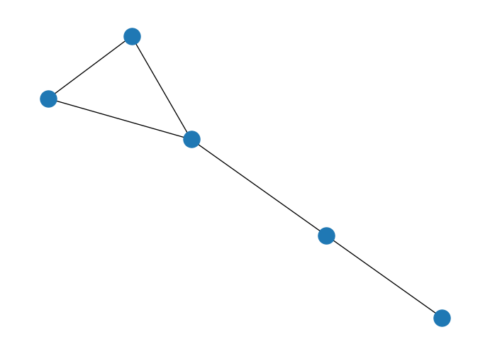
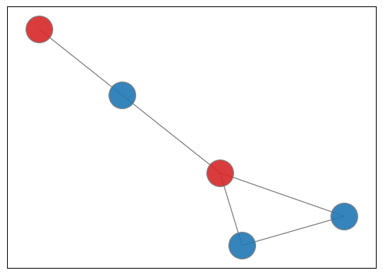

import numpy as np
S = np.array([
[3, 4, 1, 1, 2],
[1, 9, 2, 2, 1],
[6, 8, 2, 2, 1]
])
b = np.array([10, 13, 17])QUBO formulation
As we saw during class, one important part of being able to use those quantum computing devices is posing our problem as a matrix representation following the QUBO formulation. We could then convert it to Ising type if needed but we will see some of the most common frameworks already provide a translation mechanism between the too.
Therefore a critical aspect of it will be knowing how to transform our penalty terms so that the fit into the objective function to be minimized.
Known penalties
| Classical Constraint | Equivalent Penalty |
|---|---|
| \(x + y \le 1\) | \(P(xy)\) |
| $x + y $ | \(P(1− x − y + xy)\) |
| \(x + y = 1\) | \(P(1− x − y + 2xy)\) |
| \(x \le y\) | \(P(x − xy)\) |
| \(x_1 + x_2 + x_3 \le 1\) | \(P(x_1 x_2 + x_1 x_3 + x_2 x_3)\) |
| \(x = y\) | \(P(x+y- 2xy)\) |
being \(P\) a positive scalar characterizing the effect of the penalty over the cost function.
We will see how some classical problems can be mapped to their QUBO form so that this problems can be solved by Quantum Algorithms.
Binary Linear Programming
Taken from (Lucas 2014), Binary Linear Programming problem tries to solve a problem of the shape \(Sx = b\) where \(x\) is the unknown vector of binary variables to be solved. It is a simple example as it already provides the shape we need being variables binary, no higher order relation exists and has no constraints to care about. In order to solve this problem we will need to reformulate our previous form into:
\[ \arg \min_{x} \| Sx - b \| \]
\[ H_A = \sum_j^m \left[b_j - \sum_i^N S_{ji}x_ix_j \right]^2 \]
aiming to obtain our solution for \(x\) when \(H_A = 0\) so the minimization is done over \(H_A\) like follows
\[ \min_x \sum_j^m \left[b_j - \sum_i^N S_{ji}x_ix_j \right]^2 \]
Let’s select a particular instance for \(S\) and \(b\).
So, now we can start composing our \(Q\) matrix.
import itertools
n = S.shape[1]
m = b.shape[0]
Q = np.zeros((n, n))
for j in range(m):
# Diagonal terms
for i in range(n):
Q[i][i] -= 2 * b[j] * S[j][i]
tuples = itertools.product(range(n), repeat=2)
for tuple_ in tuples:
x = tuple_[0]
y = tuple_[1]
# Divided as we are adding same value to ij and ji
Q[x][y] += S[j][x] * S[j][y] / 2.
Q[y][x] += S[j][x] * S[j][y] / 2.
Qarray([[-244., 69., 17., 17., 13.],
[ 69., -425., 38., 38., 25.],
[ 17., 38., -131., 9., 6.],
[ 17., 38., 9., -131., 6.],
[ 13., 25., 6., 6., -94.]])As you can see the matrix is symetric as there is a natural symmetry between \(x_ix_j\) and \(x_jx_i\). We could brute force our solution.
min_val = 0
min_sol = []
for x in np.c_[tuple(i.ravel() for i in np.mgrid[:2, :2, :2, :2, :2])]: # noqa
if x @ Q @ x.T < 0:
if (x @ Q @ x.T) < min_val:
min_val = x @ Q @ x.T
min_sol = x
print(min_sol, "|", min_val)[1 1 0 1 1] | -558.0So our solution should be [1 1 0 1 1], let’s check.
np.matmul(S, [1, 1, 0, 1, 1])array([10, 13, 17])barray([10, 13, 17])There you go, it is the actual solution.
MaxCut
Maximum cut is another canonical example often use to characterize the flow between the nodes of a network mapping a distribution network, electricity or telecommunication networks or even circuit design. The main idea comes from splitting the vertices of a graph into two complementary sets such that the number of edges is maximally cut.
Note
NetworkX package will need to be added to your Python environment for this example_
import networkx as nx
from networkx.generators.random_graphs import gnm_random_graph
def gen_graph(size, seed=None):
if seed is not None:
return gnm_random_graph(size, size, seed=seed)
return gnm_random_graph(size, size)G = gen_graph(5, None)
nx.draw(G)
We can model this problem by identifying each node \(j\) in one or other set of the two possible options (\(x_j = 0\) or \(x_j = 1\)). With that we can set the formula \(x_i + x_j - 2x_ix_j\) so that identifies whether edge \((ij)\) is in the cut (if only one \(x\) is active then it will equal two 1).
That let’s us with the general formula
\[ \max \sum_{(i,j)} (x_i + x_j - 2x_ix_j) \]
which we can convert to a minimization problem by changing the sign.
n = G.order()
nodes = list(G.nodes)
Q = np.zeros((n, n), dtype=np.dtype(np.int32))
for edge in G.edges:
idx1 = nodes.index(edge[0])
idx2 = nodes.index(edge[1])
Q[idx1][idx1] += 1
Q[idx2][idx2] += 1
# Half the value as it is introduced twice
Q[idx1][idx2] -= 1
Q[idx2][idx1] -= 1
Q = -1.0*Q # MinQarray([[-2., -0., 1., -0., 1.],
[-0., -2., 1., 1., -0.],
[ 1., 1., -2., -0., -0.],
[-0., 1., -0., -2., 1.],
[ 1., -0., -0., 1., -2.]])min_val = 0
min_sol = []
for x in np.c_[tuple(i.ravel() for i in np.mgrid[:2, :2, :2, :2, :2])]: # noqa
if x @ Q @ x.T < 0:
if (x @ Q @ x.T) < min_val:
min_val = x @ Q @ x.T
min_sol = x
print(min_sol, "|", min_val)[0 0 1 0 1] | -4.0This case is a little bit more complicatd as more than one option can be selected. Ideally we would like to obtain all potential solutions.
solution = np.array(min_sol)
red_team = np.where(solution == 1)
blue_team = np.where(solution == 0) pos = nx.spring_layout(G) # positions for all nodes
# nodes
options = {"edgecolors": "tab:gray", "node_size": 800, "alpha": 0.9}
nx.draw_networkx_nodes(G, pos, nodelist=red_team[0], node_color="tab:red", **options)
nx.draw_networkx_nodes(G, pos, nodelist=blue_team[0], node_color="tab:blue", **options)
nx.draw_networkx_edges(G, pos, width=1.0, alpha=0.5);
Knapsack problem (quadratic)
Fitting a set of assets according to the size of the bag we want to use can be a hard combinatorial problem. Not that we are going to fo the full fledge example but it is interesting to look at it from an implementation perspective.
Quadratic Knapsack corresponds to the problem where interaction exists into the variables we would like to model:
\[ max \sum_{i=1}^{n-1} \sum_{j=i}^n w_{ij}x_i x_j \]
considering there is a budget constraint so that
\[ \sum_{j=1}^n a_j x_j \le b. \]
Variables \(x_i\) represent the mask of selecting or not \(i\) element to be considered. \(w_{ij}\) sets the value of taking in two elements at the same time, \(a_j\) represents the weight associated to \(j\) and \(b\) sets the available budget for the whole thing (the size of our Knapsack indeed). As can be seen many different types of problems can be mapped to this canonical example.
On relevant aspect of inequalities is that we will need to add slack variables to take the excess of the constraint $a_j x_j + S = b $. In this case \(S\) will be a value between 0 and \(b\) so we would need to characterize its binary representation so that the problem is still a binary quadratic problem still (\(S = 2^ns_n + \dots + 2^0s_0\))
We can start by adding the restriction to the objective function followed by a penalty term.
\[ max \sum_{i=1}^{n-1} \sum_{j=i}^n w_{ij}x_i x_j - P\left(\sum_{j=1}^n a_j x_j + S - b\right)^2 \]
Note
Test case from: https://arxiv.org/pdf/1811.11538.pdf
weight = np.array([
[2, 4, 3, 5],
[4, 5, 1, 3],
[3, 1, 2, 2],
[5, 3, 2, 4]
])
costs = [8, 6, 5, 3]
budget = 16For this case 2 slack variables might be enough to characterize the excess of \(S\).
$$
8x_1 + 6x_2 + 5x_3 + 3x_4 + 1s_0 + 2s_1 = 16
$$
costs.append(1)
costs.append(2)
costs[8, 6, 5, 3, 1, 2]And penalty, well, we need to decide on a figure.
P = 10n = len(costs)
Q = np.zeros((n, n))
# First term
for i in range(len(weight)):
for j in range(len(weight)):
Q[i][j] += weight[i][j]
# Constraint section
for i in range(n):
for j in range(n):
Q[i][j] -= P * costs[i] * costs[j]
Q[i][i] += P * 2 * budget * costs[i]
Q = -1.0*Q # minQarray([[-1922., 476., 397., 235., 80., 160.],
[ 476., -1565., 299., 177., 60., 120.],
[ 397., 299., -1352., 148., 50., 100.],
[ 235., 177., 148., -874., 30., 60.],
[ 80., 60., 50., 30., -310., 20.],
[ 160., 120., 100., 60., 20., -600.]])min_val = 0
min_sol = []
for x in np.c_[tuple(i.ravel() for i in np.mgrid[:2, :2, :2, :2, :2, :2])]: # noqa
if x @ Q @ x.T < 0:
if (x @ Q @ x.T) < min_val:
min_val = x @ Q @ x.T
min_sol = x
print(min_sol, "|", min_val)[1 0 1 1 0 0] | -2588.0Play around with the penalty term to check its effect in the final solution. Change costs so we can see the evolution of the solution and slack variables being used.
Traveling Salesperson Problem
Another example problem that has been covered in the literature. It is a problem that tries to identify the optimal route to cover a set of cities given that there is a cost associated to going from point \(a\) to point \(b\).

Let’s start by defining our variables \(x_{ij}\) which will take the positive value when the route is connected by node \(i\) to \(j\).
\[ x_{i \, j} = \begin{cases} 1, & \text{$i$ is conected to $j$} \\ 0, & \text{otherwise} \end{cases} \]
with a distance/cost of \(c_{ij}\). The idea is to visit all nodes but without going over the same route more than once. An ideally doing it at a minimum cost. Therefore,
\[ \min \sum_i^n \sum_{j, j \ne i}^n c_{ij}x_{ij} \]
But a set of conditions need to be met, in particular there is a temporal axis we will also need to consider so that by starting at a given position each time step requires movements forward. This will add a \(t\) for each step of the whole route to our previous variables (cost won’t be affected much) so that we can identify the start and ending point (\(x_{ijt}\)). Therefore, previous case will require a \(2^4 \times 2^4\) matrix to characterize the whole set of possible edges (those that exist and those which don’t).
Constraints to have in mind, the salesperson should use each road only once. That means we should limit \(\forall i \in \{0...n\} \sum_t \sum_i^n \sum_{j, j \ne i} x_{ijt} = 1\) both row and column-wise.
G = nx.DiGraph()
G.add_weighted_edges_from({
("A", "B", 20), ("A", "C", 42), ("A", "D", 35), ("B", "A", 20),
("B", "C", 30), ("B", "D", 34), ("C", "A", 42),("C", "B", 30),
("C", "D", 12), ("D", "A", 35), ("D", "B", 34), ("D", "C", 12)
})
nx.draw(G)
# Usually a good estimate for a lagrange parameter is between 75-150%
# of the objective function value, so we come up with an estimate for
# tour length and use that.
lagrange = 100from collections import defaultdict
# Creating the QUBO
Q = defaultdict(float)
# number of steps
N = G.number_of_nodes()
# Constraint that each row has exactly one 1
for node in G:
for pos_1 in range(N):
Q[((node, pos_1), (node, pos_1))] -= lagrange
for pos_2 in range(pos_1+1, N):
Q[((node, pos_1), (node, pos_2))] += lagrange
# Constraint that each col has exactly one 1
for pos in range(N):
for node_1 in G:
Q[((node_1, pos), (node_1, pos))] -= lagrange
for node_2 in set(G)-{node_1}:
# QUBO coefficient is 2*lagrange, but we are placing this value
# above *and* below the diagonal, so we put half in each position.
Q[((node_1, pos), (node_2, pos))] += lagrange
# Objective that minimizes distance
for u, v in G.edges:
for pos in range(N):
nextpos = (pos + 1) % N
# going from u -> v
try:
value = G[u][v]["weight"]
except KeyError:
value = lagrange
Q[((u, pos), (v, nextpos))] += value
# going from v -> u
try:
value = G[v][u]["weight"]
except KeyError:
value = lagrange
Q[((v, pos), (u, nextpos))] += valueThis challenges have been also classically solved using simulated annealing procedures.
from networkx.algorithms import approximation as approx
cycle = approx.simulated_annealing_tsp(G, "greedy", source="D")
cost = sum(G[n][nbr]["weight"] for n, nbr in nx.utils.pairwise(cycle))
print(f"Cost for route {cycle} is {cost}")Cost for route ['D', 'C', 'B', 'A', 'D'] is 97And can be also solved by traversing the whole solution space (if possible).
import dimod
sampler = dimod.ExactSolver()
response = sampler.sample_qubo(Q)
print(response.slice(0, 10)) ('A', 0) ('A', 1) ('A', 2) ('A', 3) ('B', 0) ... ('D', 3) energy num_oc.
0 0 0 0 1 1 ... 0 -606.0 1
1 0 1 0 0 1 ... 0 -606.0 1
2 1 0 0 0 0 ... 0 -606.0 1
3 0 0 1 0 0 ... 0 -606.0 1
4 0 0 1 0 0 ... 1 -606.0 1
5 0 0 0 1 0 ... 0 -606.0 1
6 1 0 0 0 0 ... 1 -606.0 1
7 0 1 0 0 0 ... 0 -606.0 1
8 0 1 0 0 1 ... 1 -584.0 1
9 1 0 0 0 0 ... 0 -584.0 1
['BINARY', 10 rows, 10 samples, 16 variables]response.first.sample{('A', 0): np.int8(0),
('A', 1): np.int8(0),
('A', 2): np.int8(0),
('A', 3): np.int8(1),
('B', 0): np.int8(1),
('B', 1): np.int8(0),
('B', 2): np.int8(0),
('B', 3): np.int8(0),
('C', 0): np.int8(0),
('C', 1): np.int8(1),
('C', 2): np.int8(0),
('C', 3): np.int8(0),
('D', 0): np.int8(0),
('D', 1): np.int8(0),
('D', 2): np.int8(1),
('D', 3): np.int8(0)}route = response.first.sample
cycle = [None]*5
for key in route:
if route[key] == 1:
cycle[key[1]] = key[0]
cycle[-1] = cycle[0]
cost = sum(G[n][nbr]["weight"] for n, nbr in nx.utils.pairwise(cycle))
print(f"Cost for route {cycle} is {cost}")Cost for route ['B', 'C', 'D', 'A', 'B'] is 97import neal
sampler = neal.SimulatedAnnealingSampler()
response = sampler.sample_qubo(Q)
print(response) ('A', 0) ('A', 1) ('A', 2) ('A', 3) ('B', 0) ... ('D', 3) energy num_oc.
0 0 1 0 0 0 ... 1 -584.0 1
['BINARY', 1 rows, 1 samples, 16 variables]route = response.first.sample
cycle = [None]*5
for key in route:
if route[key] == 1:
cycle[key[1]] = key[0]
cycle[-1] = cycle[0]
cost = sum(G[n][nbr]["weight"] for n, nbr in nx.utils.pairwise(cycle))
print(f"Cost for route {cycle} is {cost}")Cost for route ['C', 'A', 'B', 'D', 'C'] is 108